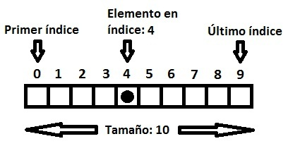

Tipos de estructuras
Las estructuras de datos son tipos de datos complejos en los que se suelen guardar
diferentes tipos de informacion dependiendo de la estructura, estas a su vez pueden
tener valores complejos o primitivos. Las estructuras de datos pueden dividirse en 3
categorias jerárquicas, lineales y
abstractas.
Jerárquicas
Árbol General
Las estructuras de árbol tienen su valor propio y ademas otras estructuras del mismo
tipo como hijos. Esto hace que al momento de ser representada tenga una forma
similar a un árbol con sus ramas y sus hojas como se muestra en la imagen.
Un claro ejemplo de este tipo de estructuras es una pagina web en la que los
diferentes elementos ejercen como nodos hijos de otro como se es visible al momento
de crear el documento HTML.

Árbol Binario
Lo que difiere un árbol biario de uno general es que el binario solo puede tener 2
hijos, el izquierdo y el derecho.
El árbol binario tiene una variante que esta diseñada para buscar elementos el
"árbol binario de busqueda" en el que se ponen los valores menores hacia un lado y
los mayores al otro haciendo que la busqueda se mas facil.

Lineales
Vactor
Los vectores tambien conocidos como arreglos son un tipo de datos que se almacenan
de forma secuencial en memoria, en esta estructura leer un elemento en la posición
n es muy facil pero agregar un elemento es costoso si el espacio en memoria
actual no es lo suficientemente grandea ademas de que borrar un elemento que no sea
el ultimo es muy costoso por tener que copiar la información para que la lista no
quede con un hueco vacio.
En conclusion los vectores son muy eficientes para leer información pero no para ser
modificados con frecuencia.

Lista enlazada
Las listas enlazadas los datos pueden estar dispersos por la memoria siendo unidos
unicamente por la referencia del elemento anterior lo que hace que eliminar
elementos sea tan facil como solo cambiar la referencia del elemento esto disminuye
el coste de creacion y borrado de elementos pero dificulta la lectura de elementos
siendo practicamente lo opuesto a un arreglo.
Las listas enlazadas son mas eficientes para modificar pero no lo son para leer el
contenido de este debido a que hay que ir elemento por elemento hasta llegar al dato
deseado.
Pila
Las pilas tambien conocidas como "Stack" por su nombre en ingles son una
estructura que sigue las reglas FILO (First in Last out) el primero en entrar es
el ultimo en salir, esta estructura es la que se usa en la ejecución de codigo en
los interpretes para saber en que linea de la ejecución se encuentra el programa
las denominadas "Pila de llamadas".
El nombre de esta estructura como el de la siguiente reprsentan su funcionamiento,
esta estructura puede ser implementada con listas enlazadas o arreglos, segun las
necesidades de el progrmador y las funciones que tendra la estructura.

Cola
Por otro lado estan las colas que tambien llamadas filas por su comportamiento en
el que la primera que entra es la primera en salir, FIFO (First in First out),
esta estructura le da una mayor prioridad de procesamiento al primero que llego
tal como pasaria en la fila de una tienda.
Esta estructura tiene una eficiencia similar a la de una pila, se recomineda
utilizar una lista doblemente enlazada para su implementacion